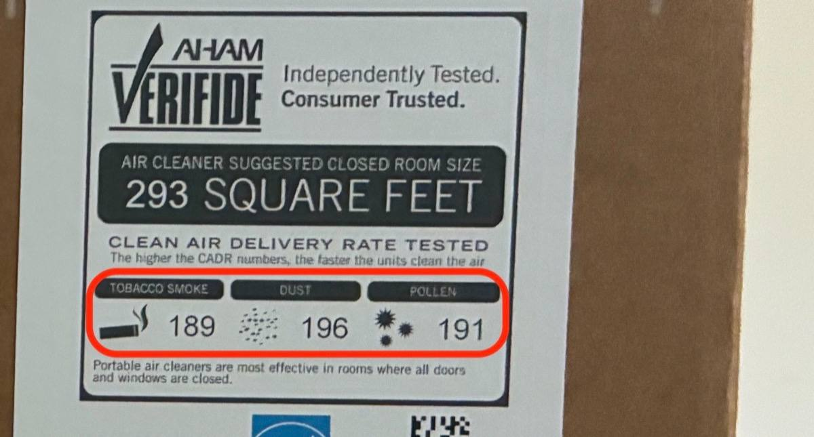
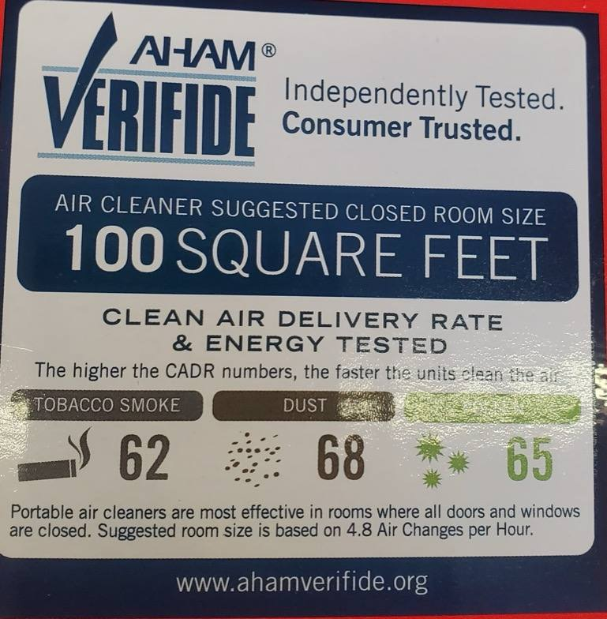
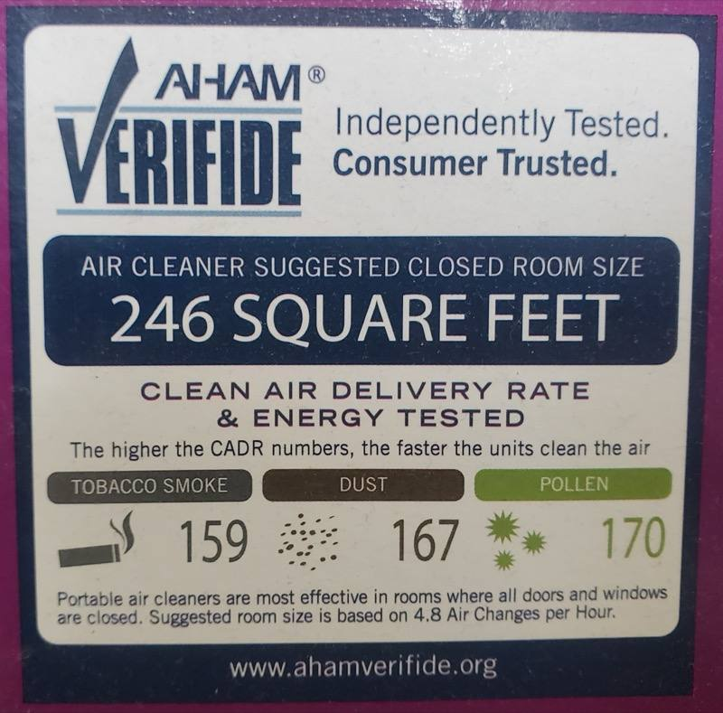

How to get cleaner air in your room
Use the air exchange rate tool to estimate how many times an hour an air cleaner can replace your room's air. This can help you improve the air quality in your room.
Step 1 of 3
What size is your room?
Where to find an air cleaner's ratings
Look for the CADR (Clean Air Delivery Rate) or air flow rating, in CFM (ft³/min):
- On the front of the box — the AHAM Verifide label lists three CADR numbers (tobacco smoke, dust, pollen). Use the lowest, usually Tobacco Smoke.
- On a specifications panel on the side or the back of the box.
- In the manual, in the specifications section.
- On the manufacturer's website — search the model number and open its specifications page.
- If it only lists air changes per hour (ACH), also note the room size that rating was measured in — the tool asks for both.



One air change means the cleaner has filtered a full room's worth of air. CARB recommends at least 2 per hour; most air-cleaner box ratings assume about 5; during wildfire smoke aim for 4–6.
Add — more air cleaners like yours
Or swap in stronger cleaners.
A listing qualifies if it claims any ONE of these:
Listing quotes a different ACH? Compare it against the next lower row.
CADR (Clean Air Delivery Rate) is the airflow rating printed on the air cleaner's box, measured in CFM — cubic feet of air moved per minute (ft³/min). Boxes usually list three CADR numbers — tobacco smoke, dust, and pollen. Compare against the Tobacco Smoke number (usually the lowest): match or beat it to reach your target.
Your setup delivers — air changes per hour, against your target of 2.
Your cleaner covers a room up to —, while your room is about —.
Box says something different? Air cleaner packaging lists a room size based on about 5 air changes per hour, so it won't match the coverage shown here unless that's your target too.
Where to find an air cleaner's ratings
Look for the CADR (Clean Air Delivery Rate) or air flow rating, in CFM (ft³/min):
- On the front of the box — the AHAM Verifide label lists three CADR numbers (tobacco smoke, dust, pollen). Use the lowest, usually Tobacco Smoke.
- On a specifications panel on the side or the back of the box.
- In the manual, in the specifications section.
- On the manufacturer's website — search the model number and open its specifications page.
- If it only lists air changes per hour (ACH), also note the room size that rating was measured in — the tool asks for both.
Getting the most from your air cleaner
- Remove all plastic wrapping from the filter before installing it.
- Keep windows and doors closed while it runs.
- Use it in the room where you spend the most time, usually a bedroom.
- Leave at least a foot of clearance around the air intake and outlet.
- Keep it out of corners — sitting mid-wall, it can pull air from more of the room.
- If you use more than one cleaner, place them on directly opposite sides of the room.
- Replace the filter on the schedule in your unit's manual — a clogged filter cleans less air.
Air cleaner
CADR means Clean Air Delivery Rate, in CFM — cubic feet of air per minute (ft³/min). Use the lowest of the three CADR numbers (usually Tobacco Smoke).
In what size room was that measured?